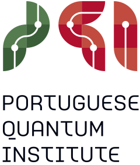
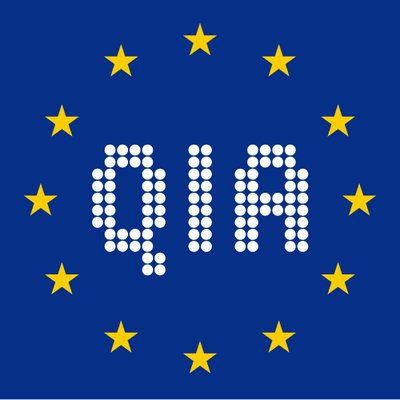
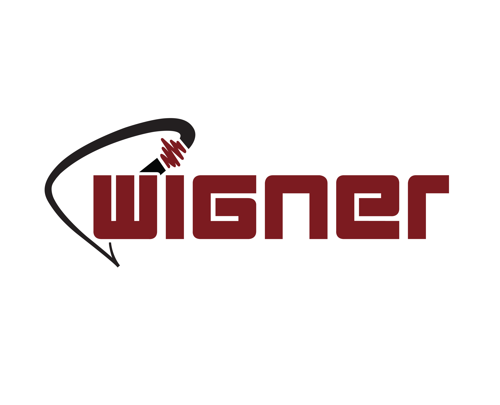
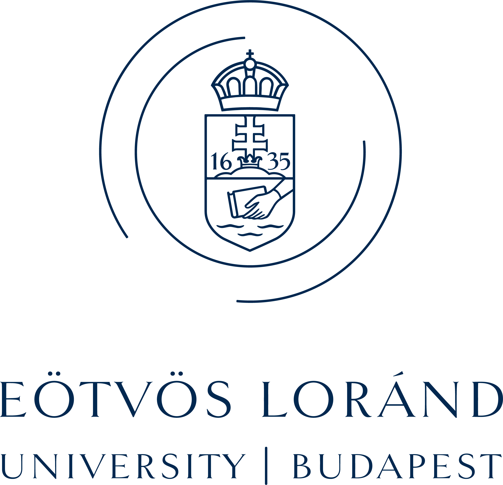

Research & Experience
Research

Working on quantum networks and sensing technologies, exploring their applications to drive innovation and solve complex real-world challenges. Focus areas include quantum network architectures and protocols, entanglement generation and scalable distribution techniques, and scalable long-distance distributed quantum network simulations.
Coordinating research on distributed quantum algorithms, non-local quantum games, quantum machine learning, and the use of entanglement as a resource for distributed quantum computing.
As a research leader, I value collaboration, mentorship, and interdisciplinary thinking, believing that transformative innovation is achieved through collective effort and a shared vision for the future of science and technology.
Skills: PennyLane · Distributed Quantum Sensor Networks · Multipartite Entanglement Distribution · Scalable Distillation Techniques · Team Leadership

As part of the Quantum Internet Alliance (QIA) Internship Programme at the Portuguese Quantum Institute, I conducted research on distributed quantum sensor networks, focusing on their applications and potential use cases. This project was carried out within the Physics of Information and Quantum Technologies Group.
Skills: PennyLane · Quantum Sensing · Quantum Networks · Privacy

My work at Wigner revolved around the design of quantum algorithms. Specifically, entanglement distillation protocols for multipartite networks. By iteratively applying these non-linear quantum protocols, we aimed to obtain an enhanced noise-free entanglement. To achieve this goal, we leveraged quantum-classical hybrid machine learning techniques to assist in the implementation of quantum circuits that can establish distilled entanglement with high fidelity. In addition, we implemented simulations and tested the above mentioned algorithms on real quantum devices.
Skills: Qiskit · Quantum algorithms · Mathematica · Python (Programming Language) · Quantum Computing · Machine Learning
Discover more:
Training iterated protocols for distillation of GHZ states with variational quantum algorithms
Practical scheme for efficient distillation of GHZ states
Education

I completed my doctorate in the field of quantum computing. My research focuses on quantum error correction, specifically which quantum computing platforms are best suited to demonstrate the efficiency of the quantum repetition phase-flip code. We have derived a break-even point above which the encoded logical qubit is advantageous and preserves information longer than a single unprotected physical qubit.
Skills: Mathematica · Quantum Computing
Find out more: Break-even point of the phase-flip error correcting code
I conducted research on quantum optimization through citizen science, and in my thesis, I demonstrated the realization of a spin-qubit based two-qubit logic gate, specifically the square-root-of-swap gate, through the optimization of a gate pulse shape. This posed a hard quantum mechanical optimization problem, which was gamified and transformed into a game for the public. I designed a platform where gamers drew a pulse shape within a certain time frame. Even recent classical supercomputers may find this multi-parameter optimization problem difficult to solve, but gamification utilizing human senses may be more successful.
GitHub Repository: Quantum Games for Two-Qubit Gate Optimization
I studied the coupling between a qubit and an oscillator in a nano-electromechanical system. In this theoretical work, a charge qubit was implemented using a trapped electron in a suspended carbon nanotube, and was controlled using gate electrodes. The charge states of the qubit were coupled to the vibration modes of the nanotube, and an effective read-out scheme was introduced. I also investigated the ultra-strong coupling regime.
Teaching & Supervision
The internship project explores GHZ state distribution in quantum networks under realistic noise conditions. The focus is on modeling a realistic, scalable, long-distance quantum network architecture which implements GHZ state distribution between remote nodes through noisy fibers. To counteract decoherence and gate errors, distillation protocols are implemented at the end nodes and at intermediate stations along the links. The aim is to study trade-offs between fidelity, success probability, resource cost, and latency, and to identify optimal strategies for distributing high-quality GHZ states across long distances.
This work is carried out under the Quantum Internet Alliance (QIA) Internship Programme at the Portuguese Quantum Institute, within the Physics of Information and Quantum Technologies Group.
GitHub Repository: GHZ Distribution Internship
During the internship, several projects were carried out in the field of quantum protocols. These included the study of non-linear iterative protocols on 2- and 3-qubit systems, with a focus on entanglement generation and state evolution. The dynamics of these protocols were analyzed, revealing chaotic behavior under certain conditions. Quantum circuits were implemented using Qiskit to simulate and test these effects, supported by numerical analysis and visualization in Python to explore convergence properties and bifurcations in the system.
GitHub Repository: Exploring chaotic behavior of nonlinear quantum protocols
This course explores the theoretical foundations and applications of classical electromagnetism and optics at an advanced level. Topics include Maxwell’s equations, wave propagation, electromagnetic radiation, optical systems, and interference and diffraction phenomena, with an emphasis on mathematical formulation and physical insight.
This laboratory course provides practical experience in classical physics through experiments in mechanics, thermodynamics, electromagnetism, and optics. Students learn to apply theoretical knowledge, develop experimental techniques, and analyze data to understand fundamental physical phenomena.
The course covers the fundamental aspects of boxing, including the kinematics and dynamics of punching, key techniques, footwork, and defensive strategies. Students also focus on building stamina and understanding the tactical elements essential to the sport.